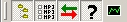
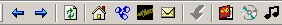
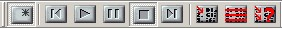

| Homepage: http://www.ractive.ch/gpl/AGStreme.html |
User Interface
JAGS uses an interface that is based on dockable panes (control bars). This allows you to arrange the panes as YOU like it. To do that, simply drag the titlebar of a pane to a desired location. If you get near the border of the window, the pane will "dock" to this border
Some tips:
Keep these techniques in mind! Otherwise it can be a pain to arrange the panes as desired.... (you have been warned :-)
To show or hide a pane, click on the corresponding icon in the toolbar

or choose if from the menu "View - Show panes".The panes
Shares
This pane shows all your shared directories. All MP3 files within this directory are made available to all other AudioGalaxy users. All subfolders are also shared (so there's no need to also include them as shares).
The one that is printed bold is your download directory. All requested songs will be downloded to this directory.
To add a new share, click on the "Share directory" button in the toolbar and choose the new folder to share.
To stop sharing a folder, select it in the tree and hit "Remove share"
You
must have at least one shared directory!
If you want to change the default download directory (where the satellite stores new downloaded files), select it in the tree and hit "Set as download directory" . Newly downloaded files will be stored there...
MP3 files
This pane shows you all MP3 files of the selected directory in the "Shares" pane. You can sort them by clicking on a header ("Name"/"Size"/"Date/Time").
If you select a file (by clicking on it), you will see information about it in the MP3 Info pane.
To play a song immediately, doubleclick on it. This will open your favourite MP3 player. If you're using WinAmp, you can add songs to the playlist by selecting them in the list (hold CTRL to select multiple songs) and clicking the play button of the WinAmp toolbar.
MP3 Info
This pane shows some information about the currently selected song in the "MP3 files" pane.
Switch among the tabs to either see infos about the MP3 file-headers or the ID3 tags. ID3 tags store information about the song in the file. Whereas the ID3v1 standard only supported the basic types of informations (and only up to 32 characters per fiels), the ID3v2 tags can store every information you like (including a picture of a cover etc.). For more information about ID3 tags, visit http://www.id3.org
You can change the ID3 tags and hit "Save" to permanently store it to the file, "clear" them or exchange them between the ID3v1 and ID3v2 tag.
Toolbars
Main toolbar
See the "Shares" section above...
Browser toobar

The functions are from left to right:
WinAmp toolbar

If you have WinAmp installed you can control it with this toolbar (if WinAmp is running).
The "Start winamp" button let you start and close WinAmp.
The "Previous" and "Next" button change to the previous/next song in the playlist. You can "Play", "Pause" and "Stop" WinAmp.
The "Add to Playlist" button adds the currently selected songs in the "MP3 files" pane to the current playlist of winamp. You can clear WinAmp's playlist with the "Clear playlist" button.
If you hit play, it stars playing the current playlist, BUT only if WinAmp is already running. If WinAmp is not running, you may want to doubleclick on a song to start WinAmp (if it's associated with MP3 files).
The "Random Playlist" lets you create a random playlist of either all your songs (in the music database) or of a specific artist or genre.